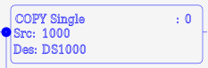
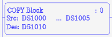
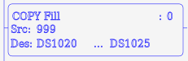
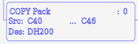
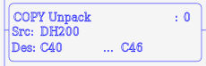
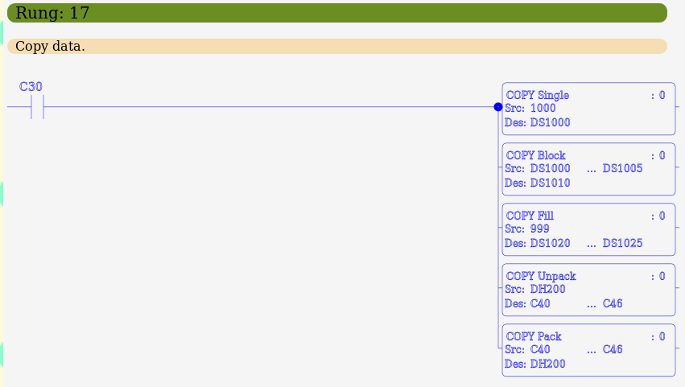

MBLogic
for an open world in automation
MBLogic
for an open world in automation
Copy Instructions
Copy instructions are used to copy data between registers, convert register data between types, and copy data between registers and Boolean (bit) addresses. Copy instructions are conditional output instructions which execute only if the logic stack is true. They also have an option to execute in a one-shot manner. Errors are indicated in the system control relays (SC43, SC44).
| Instr. | Descr. | # Param | One Shot | Pointers | SC43 | SC44 | Symbol |
|---|---|---|---|---|---|---|---|
| COPY | Copy a single value to a register | 2 or 3 | X | X | X | X |  |
| CPYBLK | Copy a block of data | 3 or 4 | X | X |  | ||
| FILL | Fill a block of data | 3 or 4 | X | X |  | ||
| PACK | Pack bits into a register | 3 or 4 | X |  | |||
| UNPACK | Unpack bits from a register | 3 or 4 | X |  |
Copy Single
The Copy Single (COPY) instruction is used to copy a single register, or constant (including a text string) to another register (or series of registers for text string constants). It is also the only instruction which will accept pointers as a source or destination.
The COPY instruction expects the following parameters:
- Source - This may be a register, a constant, a string constant, or a pointer. Register types may be DS, DD, DF, DH, TD, CTD, SD, TXT, XD, YD, XS, or YS. Constant types may be KInt, KDInt, KF, KHex, KTxtChar, KTxtStr.
- Destination - This must be a register. Register types may be DS, DD, DF, DH, TD, CTD, TXT, XD, YD, XS, or YS.
- An optional one shot parameter of 0 or 1 (see below).
COPY source destination (one-shot)
The COPY instruction will convert types as necessary when copying between otherwise incompatible registers. If a copy is made from a numeric register or constant to a text register, the digits will be converted to a text string, and one character being placed in each consecutive register. As many registers will be used as are necessary to hold the resulting string.
The error flags are set under the following conditions:
- SC43 - The data could not be converted to the correct type, or the data value is out of range of the destination register.
- SC44 - The pointer address is out of range, the destination address is out of range or the data is of an unknown type.
Pointer (or indirect) addresses are specified by enclosing the variable part of the address in square brackets. For example: DS[DS100]. This specified a "DS" type register where the numeric part of the address is stored in DS100. If in example the value stored in DS100 was 42, then the effective address for DS[DS100] would be "DS42".
The following register types may use pointer (indirect) addresses:
- DS - For example: DS[DS100]
- DD - For example: DD[DS100]
- DF - For example: DF[DS100]
- DH - For example: DH[DS100]
The variable part of the address (the part enclosed in square brackets) must always be stored in a "DS" register. For example, "DD[DS569]" is correct. However, "DD[DD569]" is incorrect.
Example:
// Copy a constant to a register. NETWORK 1 STR SC1 COPY 100 DS1 // Copy a register to a register. NETWORK 2 STR SC1 COPY DS1 DD101 // Copy a character to a text register. NETWORK 3 STR SC1 COPY "A" TXT100 // Copy a character string to six consecutive text registers. NETWORK 4 STR SC1 COPY "abc123" TXT200 // Copy a number to a text register, converting to text. NETWORK 5 STR SC1 COPY 123 TXT300 // Copy with a one shot. NETWORK 6 STR X1 COPY 100 DS200 1 // Copy a constant to a pointer. NETWORK 7 STR SC1 COPY 567 DS1000 COPY 100 DS[DS1000] // Copy a register to a pointer. NETWORK 8 STR SC1 COPY 567 DS1000 COPY DS100 DS[DS1000] // Copy a pointer to a register. NETWORK 9 STR SC1 COPY 567 DS1000 COPY DS[DS1000] DS100 // Copy a pointer to a pointer. NETWORK 8 STR SC1 COPY 567 DS1000 COPY 568 DS1001 COPY DS[DS1000] DS[DS1001]
Copy Block
The Copy Block (CPYBLK) instruction is used to copy a block of consecutive registers to another block of consecutive registers.
The Copy Block instruction expects the following parameters:
- Source Start - The start of the source register range. Register types may be DS, DD, DF, DH, TD, CTD, SD, or TXT.
- Source End - The end of the source register range. This must be a higher address of the same type as the source start.
- Destination Start - The start of the destination register range. The end of the destination register range is calculated automatically from the number of source registers. This must be of types DS, DD, DF, DH, TD, CTD, or TXT and must be of a type compatible with the source registers. There must be a sufficient number of registers available before the end of the address range to accomodate all the source registers.
- An optional one shot parameter of 0 or 1 (see below).
CPYBLK sourcestart sourceend destinationstart (one-shot)
The error flags are set under the following conditions:
- SC43 - The data could not be converted to the correct type, or the data value is out of range for the destination register.
Example:
// Copy a set of registers. NETWORK 1 STR Y3 CPYBLK DS1 DS10 DD1 // Copy with one shot. NETWORK 2 STR Y3 CPYBLK DS1 DS10 DD1 1
Copy Fill
The Copy Fill (FILL) instruction is used to copy a single register or constant to a series of consecutive registers.
The Copy Fill instruction expects the following parameters:
- Source - This may be a register or a constant. Register types may be DS, DD, DF, DH, TD, CTD, SD, or TXT. Constant types may be KInt, KDInt, KF, KHex, or KTxtChar.
- Destination Start - The start of the destination register range. This must be of types DS, DD, DF, DH, TD, CTD, or TXT and of a type compatible with the source.
- Destination End - The end of the destination register range. This must be a higher address of the same type as the destination start.
- An optional one shot parameter of 0 or 1 (see below).
FILL source destinationstart destinationend (one-shot)
The error flags are set under the following conditions:
- SC43 - The data could not be converted to the correct type, or the data value is out of range for the destination register.
Example:
// Fill a set of registers with a numeric value. NETWORK 1 STR X1 FILL 1 DS1 DS100 // Fill a set of registers with a value from another register. NETWORK 2 STR X2 FILL DS1 DD100 DD150 // Fill using a one-shot. NETWORK 3 STR X3 FILL "A" TXT300 TXT 321 1
Copy Pack
The Copy Pack (PACK) instruction is used to pack a series of boolean (bit) values into a single register. Unused bits will be be set to zero.
The Copy Pack instruction expects the following parameters:
- Source Start - The start of the Boolean address range. Boolean types may be X, Y, C, T, CT, SC.
- Source End - The end of the Boolean address range. This must be a higher address of the same type as the source start. There must be no more than sixteen boolean addresses to be packed.
- Destination - The the destination register. This must be of type DH or YD.
- An optional one shot parameter of 0 or 1 (see below).
PACK sourcestart sourceend destination (one-shot)
The PACK instruction does not affect the error relays.
Example:
// Pack some inputs into a register. NETWORK 1 STR C2 PACK X1 X16 DH1 PACK X20 X25 DH2 // Pack, with a one shot. NETWORK 2 STR C5 PACK X100 X116 DH10 1
Copy Unpack
The Copy Unpack (UNPACK) instruction is used to unpack a single register into a series of boolean (bit) addresses.
The Copy Unpack instruction expects the following parameters:
- Source - The register to unpack. Register types may be DH.
- Destination Start - The start of the Boolean address range to unpack to. This must be of types Y, or C.
- Destination End - The end of the Boolean address range. This must be a higher address of the same type as the destination start. There must be no more than sixteen boolean addresses to be unpacked.
- An optional one shot parameter of 0 or 1. If the paramter is set to "1", the one-shot option is enabled and the instruction executes only when the logic stack transitions from false to true. If the paramter is set to "0", the one-shot option is disabled and the instruction executes whenever the logic stack is true. If the parameter is missing, it has the same effect as setting it to "0".
UNPACK source destinationstart destinationend (one-shot)
The UNPACK instruction does not affect the error relays.
Example:
// Unpack a register. NETWORK 1 STR C2 UNPACK DH1 C1 C16 UNPACK DH2 C25 C28 // Unpack, with a one shot. NETWORK 2 STR C5 UNPACK DH5 Y1 Y16 1
Error Flags
When any copy instruction which uses either error flag is executed, both error flags (SC43, SC44) are reset. If an error is encountered, the appropriate error flag is set and the operation is aborted.
Ladder Examples
The following shows examples in ladder format.
